Cátedra 1: Introducción a la Termodinámica
Qué estudia la termodinámica, cómo surgen las propiedades macroscópicas de sistemas con muchos constituyentes, y por qué el equilibrio es el concepto central.
Temas que cubre
- Definición de termodinámica: física del calor y la transferencia de energía
- Sistemas macroscópicos: materia compuesta de muchos constituyentes (~$10^{23}$)
- Fluctuaciones y su escala: $\Delta \propto 1/\sqrt{N}$
- Variables macroscópicas: $T$, $P$, $V$, $N$, $U$
- Variables intensivas (no dependen del tamaño) vs. extensivas (proporcionales al tamaño)
- Equilibrio termodinámico: estado de máxima probabilidad
- Irreversibilidad macroscópica vs. reversibilidad microscópica
Conceptos clave
Sistema macroscópico
Un sistema formado por un número enorme de constituyentes ($N \sim 10^{23}$). Sus propiedades medibles son promedios estadísticos: aunque cada partícula fluctúa, el promedio es extremadamente estable.
Fluctuaciones
Las variables macroscópicas fluctúan alrededor de su valor promedio en una escala $\sim 1/\sqrt{N}$. Para $N \sim 10^{23}$, las fluctuaciones relativas son de orden $10^{-11}$: prácticamente imperceptibles.
Variables intensivas y extensivas
Las variables extensivas escalan con el tamaño del sistema: $V$, $N$, $U$. Las variables intensivas no dependen del tamaño: $T$, $P$. Al juntar dos sistemas iguales, $T$ no cambia pero $V$ se duplica.
Equilibrio termodinámico
Estado en que las variables macroscópicas no cambian con el tiempo. Es el estado de máxima probabilidad del sistema: la enorme mayoría de los microestados compatibles con las condiciones macroscópicas corresponden a ese estado.
Fórmulas fundamentales

$k_B = 1.38\times10^{-23}$ J/K
Qué hay que entender
- La termodinámica emerge de tener muchos constituyentes: no es aplicable a sistemas de pocas partículas.
- Las leyes microscópicas son reversibles en el tiempo ($t \to -t$), pero el comportamiento macroscópico es irreversible. Esto no es una contradicción: es consecuencia de la probabilidad.
- El equilibrio no es que "nada ocurre": es que el sistema está en el estado más probable. Las fluctuaciones microscópicas siguen ocurriendo.
- Distinguir intensiva de extensiva es crucial para no cometer errores al escalar sistemas.
- La termodinámica histórica nació de un problema práctico: entender las máquinas de vapor para mejorar su eficiencia.